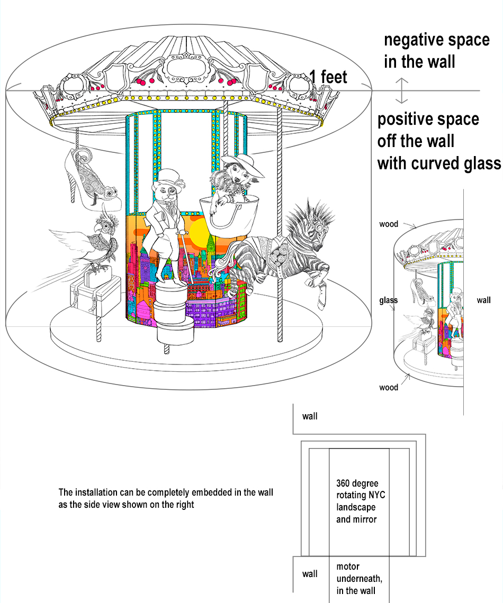

Hassenfield Children’s Hospital
Shadow Boxes Project Proposal
To Whom It May Concern:
I am proposing 3 installations, one on each floor for the Hassenfield Children’s Hospital Shadow Boxes project.
I have 15 years experience working as an interdisciplinary art professional. From my extensive hands on experience in art and design, I have produced many works in various mediums and styles customized for different audiences.
My proposed project uses mixed media to create miniature mechanical merry go rounds that display fantasy scenes that re-imagine familiar places from New York’s cityscape. Each shadow box will be built with slightly different materials but in the same art style and mechanism.
Included in the proposal are the following materials:
The estimated cost per shadow box ranges from 7500 to 12000 USD depending on the materials and production method.
The dimension and installation method can be adjusted to best showcase the artworks within the space. I am very excited about this opportunity to create whimsical and imaginative works for children. I will be honored to help turning hospital into a friendly environments for the visitors.
I am very happy to discuss the content and style of the art works and am flexible about the final display set up.
Ground Fl. NY Harbor
Water Tower Goes Round and Round
Marine creatures secretly turn the water tower into their playground! I want to make a mechanical miniature merry go round inside a water tower. The project is in a 1x1x1 cubic feet space that is half embedded in the wall with curved glass. The piece will have motor in the center that actually operates the carousel with LED light design that can be viewed 360 degrees.
The main animals are sculpted with polymer clay, with fabrics, acrylic paints, beads, gold leaf, and metals as needed. The carousel structure will be built by wood and the mechanical parts will be built by metals. The top of the water tower will be stained thin metal. The center of the carousel will have mirrors to create viewing depth to the piece.
Project Sample: Squid
Polymer clay
Project Sample: Narwhal
Polymer clay
4th Fl. Central Park
Central Park Zoo Animals’ Subway Ride
The widely adored animals of the Central Park Zoo are going for a ride on the New York subway. Red panda and grizzly bear snuggle with each other and snow monkeys pile up in one seat! How adorable! The project is in a 1x1x1 cubic feet space that is half embedded into the wall with a curved glass. The piece will have a motor in the center and built into the wall that actually operates the carousel with LED light design that can be viewed 360 degree. Each set of seats comes with a window that allows viewers to see the sceneary outside.
The main animals are sculpted with polymer clay, with fabrics, faux fur, acrylic paints, beads, gold leaf, and metals as needed. The carousel structure will be built by wood and the mechanical parts will be built by metals. The center of the carousel will have mirrors to create viewing depth to the piece.
7th Fl. Manhattan
5th Ave. Pets Fashion Show
Pets in the city have their mini fashion show on 5th avenue! I want to make a mechanical miniature merry go round that showcases the pet’s fashion. The project is in a 1x1x1 cubic feet space that is half embedded into the wall with a curved glass. The piece will have motor in the center that actually operates the carousel with LED light design that can be viewed 360 degree.
The main animals are sculpted with polymer clay, with fabrics, acrylic paints, beads, gold leaf, and metals as needed. The carousel structure will be built by wood and the mechanical parts will be built by metals. The center of the carousel will have mirrors to create viewing depth to the piece. The city scape in the center will also be made with polymer clay and acrylic paints to create 3D depth.
Past Work Samples
Henry Bendel 5th Ave flagship store holiday display, 2011

Polymer clay Wgashi japanese desert mini sculpture. 2014, High 5 Games

Resume
Education
2009 MFA New Genres, San Francisco Art Institute, USA
2005 Bachelor of Fine Arts, National Kaohsiung Normal University, Kaohsiung, Taiwan
Artist-in-residence
2010 The MacDowell Colony, New Hampshire, USA
2009 Anderson Ranch Arts Center, Colorado, USA
2006 TaiTung Railway Art Village, TaiTung, Taiwan
Screening
2010 Plastic Bag Girl, Screening, Mobile Arts Platform, SOMArts Culture Center, San Francisco, USA
2009 Plastic Bag Girl, Screening, International Guerrilla Video Festival, Dublin, Ireland
2008 Plastic Bag Girl, Screening, ATA, San Francisco, USA
Solo Exhibitions
2011 Glamorous Enclosure, Mooney Center Gallery, The College of New Rochelle, NY, USA
2008 Hide and Seek, Swell Gallery, San Francisco, USA
2008 Wet House, Diego Rivera Gallery, San Francisco, USA
2006-2007 A Hundred Ways to Make Wishes, Stock 261, TaiTung Railway Art Village, TaiTung, Taiwan
Select Group Exhibitions
2015 Let’s meet at Jungdabang, Gallery Jungdabang Project, Seoul, South Korea
2012 Juried Exhibition, Brenda Taylor Gallery, New York, USA
2011 Sunday Brunch, This Red Door, New York, USA
2011 Exquisite Corpse Festival, Space of White Gallery, New York, USA
2011 School’s Out! Recent Grads competition winner show, Caelum Gallery, New York, USA
2011 Couplings, International Jury Exhibition, Gallery 110, Seattle, USA
2010 Rocking Horse, Taiwan Young Artist Exhibition, SOKA Art Center, Tainan & Taipei City, Taiwan
2010 An Eulogy on My Humble Abode, Arts in Storefronts Project: Chinatown, San Francisco Art Commission, San Francisco, USA
2010 Moments-100 Performances for the Hole-Take Two, SOMArts Culture Center, San Francisco, USA
2010 Lopped Off, Swell Gallery, San Francisco, USA
2010 Chain Reaction 11, City Hall, San Francisco, USA
2009 Instant Soup, Patton-Malott Gallery, Colorado, USA
2009 APAture 2009, Asian American Art Show, Goforaloop Gallery, San Francisco, USA
2009 LAB>, Queen’s Nail Gallery, San Francisco, USA
2009 Vernissage, MFA graduate exhibition, Herbst Pavilion, San Francisco, USA
2009 Locality, Mission Art Center, San Francisco, USA
2009 Soft Transgression, SFAI Graduate Center, San Francisco, USA
2008 Taste 2008, Root Division, San Francisco, USA
2005 Black-out Notice, Kaohsiung, Sin Pin Pier, Kaohsiung, Taiwan
2005 Art Player, Stock 20, Taichung Railway Art Village, Taichung, Taiwan
2005 I Recorded, Kaohsiung Culture Center, Kaohsiung, Taiwan
2004 Only I Record Is OK, NKNU Gallery, Kaohsiung, Taiwan
Select Solo Performances
2010 Cotton Candy as Self-portrait: Moments-100 Performances for the Hole-Take Two, SOMArts Culture Center, San Francisco, USA
2008 Plastic Bag Girl, Performance, SFMOMA, San Francisco, USA
2008 Poetry, Performance, The Garage Biennale, San Francisco, USA
2006 Change, Performance, Taipei, Taipei International Art Festival, Taipei, Taiwan
Curated Shows
2010 Symbolic Flow, SUB-Mission Gallery, San Francisco, USA
Workshops
2010 Hybrid Aesthetic Workshop, instructor, Adult Continue Education Program, San Francisco Art Institute, San Francisco, USA
2009 Interior Landscape Workshop, instructor, Center for Elders & Youth in the Arts, San Francisco, USA
2006 A Relay Race of Picture Book Mapping, instructor, TaiTung Railway Art Village, TaiTung, Taiwan
Publications
2014 The George Kuchar Reader, Estate of George Kuchar, Primary Information, New York
2014 Bat City Review, issue10, p.72-78, The New Writers Project, Texas
2013 History of Fine Art in Postwar Taiwan, Artist Publish Inc. Taiwan
2010 NTCTV news http://www.eglobalcommunity.com/zh/view/75611
2010 KQED radio interview, Arts in Storefronts Chinatown Project
2010 SF Weekly, June 9-15, volume 29, number 20, p.22.
2010 Illustration Professional Winner, Creative Quarterly No.19, New York, USA
2010 BAVC’s channel, Moments-100 Performances for the Hole-Take Two, air on March 26th
Public Collections
2010 Embrace series, edition 4/25, color digital prints, National Taiwan Museum of Fine Arts, Taichung, Taiwan
Contact
Hui-Ying Tsai
415-756-1222
huiytsai@gmail.com
100 Bleecker St. Brooklyn, NY 11221